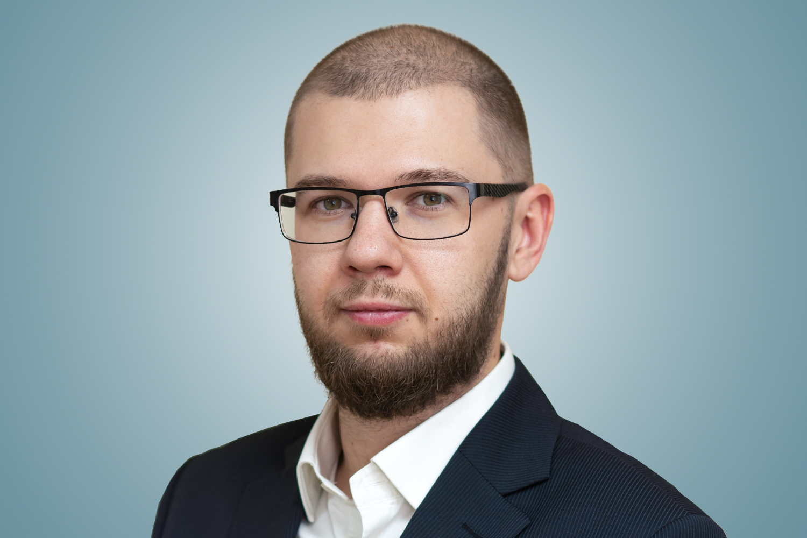

Victor Rusaev. BI Analyst

Date of birth: 23.10.1987
rusaev74@mail.ru
+7 981 186 36 71
LinkedIn
Education
Higher
2004-2009
Specialist degree in Mechanical Engineering
in Automobile and Automobile Maintenance
South Ural State University (Chelyabinsk, Russia).
Tuition fee waiver.
2008-2011
Specialist degree in Business Management in Logistics,
South Ural State University (Chelyabinsk, Russia)
(incomplete higher education).
Additional
2015/2017/2019
Peikko Systematic Sales.
Basic module.
Advanced module.
Project Sales.
2019
Ken Blanchard’s Situational LeaderShip II Workshop
2019
Peikko Leadership program.
Change management and motivation.
2022
Excel. Basic Module.
Advanced module. Data Analysis.
Power Query.
2022-2023
BI Analyst. Geek Brains
Work experience
2020 - till now
ZIEHL-ABEGG Russia
Position
Business development director
Duties
My main goal was to expand the numbers of leads
from the different channels:
- Set up advertising campaigns in Google Ads
and Yandex.Direct
- Compiled reports on data uploaded from the database
- Analyzed sales figures by segment,
individual products, regions and customers
- Made a general sales forecast for the year
- Made a sales forecast for the year
for individual product groups and customers
- Calculated the ROE indicator
- Participated in the compilation
and analyzed the Cash Flow Statement
- Analyzed and evaluated the potential
of the direction for the start and development of sales
- Improved the quality of work in CRM,
developed guides and trained colleagues
Tools
- Excel (PIVOTs)
- Power Query
- MS Dynamics CRM
2012 - 2020
Peikko Russia
Position
Sales director
Achievements
While I worked in Peikko Russian Unit grew up
from 1500 m2 to 7500 m2.
At the same time, number of personnel was grown up
from 20 to 125 employees.
Sales and logistics team grew up from 4 to 10 employees.
New offices in Moscow and Chelyabinsk were established.
Duties
- Analyzed sales by various parameters
and planned the work of the sales department
- Predicted sales by segments and products
- Prepared sales reports for management
and the Board of Directors (Russian and English)
- Calculated the profit margin
and determined the measures necessary to increase it
(product groups, regions and customers)
- Participated in the compilation
and analysis of the Cash Flow Statement
- Participated in budget planning
- Analyzed and evaluated the potential of the direction
for sales development
- Implemented and developed the use of CRM
in the sales department, developed work guides
and trained colleagues
Tools
- Excel (PIVOTs)
- MS Dynamics CRM
- MS Dynamics AX
- QlickView
Hobbies
- I am blogging about modern Russian literature
with total 900+ subscribers.
My blog became a finalist of the Litblog Award 2021
Telegram
Instagram
- I moderate «Slow readings» within the book club
- I moderate events and discussions in the writers' community Colloquium
Contacts
rusaev74@mail.ru
+7 981 186 36 71
Telegram
LinkedIn